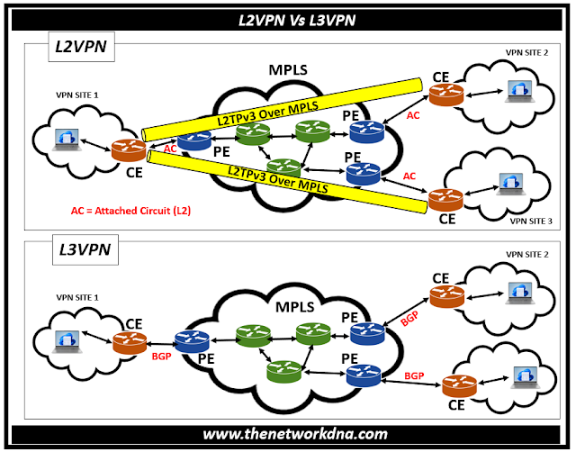

MPLS VPN เป็นเทคโนโลยีที่นิยมใช้ในเครือข่ายขององค์กรและผู้ให้บริการ เพื่อเชื่อมต่อสาขาต่างๆ เข้าด้วยกันอย่างปลอดภัย โดยแบ่งเป็น 2 ประเภทหลักคือ Layer 2 VPN และ Layer 3 VPN ซึ่งมีความแตกต่างในวิธีการทำงานและการใช้งาน
| หัวข้อ | MPLS Layer 2 VPN | MPLS Layer 3 VPN |
|---|---|---|
| การส่งข้อมูล | ส่ง "เฟรม" ระดับ Layer 2 (เช่น Ethernet Frame, PPP Frame) ระหว่างสาขา | ส่ง "แพ็กเก็ต" ระดับ Layer 3 (IP Packet) โดยทำ Routing ให้เลย |
| มองจากมุมมองลูกค้า | ลูกค้าเหมือนได้ "สาย Ethernet" หรือ "Link Layer 2" ข้ามเมือง | ลูกค้าส่ง IP Packet แล้ว Provider จัดการ Routing ทั้งหมดให้ |
| PE Router (Provider Edge) | ไม่ยุ่งกับ Routing Table ของลูกค้า (แค่ส่ง Layer 2 Frames) | ต้องมี VRF (Virtual Routing and Forwarding) ของแต่ละลูกค้า แยกกัน |
| ตัวอย่างบริการ |
- VPWS (Virtual Private Wire Service) - VPLS (Virtual Private LAN Service) - EVPN (Ethernet VPN) |
- MPLS L3VPN (RFC 4364) |
| ความซับซ้อนของ Provider | ง่าย (เพราะไม่ต้องสนใจ IP Routing ของลูกค้า) | ยาก (ต้อง Manage Routing Table ของลูกค้าหลายราย) |
"ส่ง Layer 2 Frame ผ่าน MPLS Core"
Point-to-Point L2 Connection (เหมือนสายเช่า Metro Ethernet)
L2 Multipoint-to-Multipoint (เหมือนสร้าง LAN เสมือนให้หลาย Site เห็นกันเหมือนอยู่ Hub เดียวกัน)
รุ่นใหม่ ใช้ BGP แจก MAC Address (มี Multihoming, Load Balancing ดีขึ้นกว่า VPLS เยอะ)
เหมาะสำหรับลูกค้าที่:
"ส่ง IP Packet ผ่าน MPLS Core"
เหมาะสำหรับลูกค้าที่:

แบบบน: MPLS Layer 2 VPN - Customer A Site 1 --- L2 Tunnel --- Customer A Site 2 (ลูกค้าจัดการ IP เอง)
แบบล่าง: MPLS Layer 3 VPN - Customer B Site 1 --- L3 Routed Network --- Customer B Site 2 (Provider ช่วย Routing ให้)
เมื่อดูภาพสถาปัตยกรรมจะเห็นความแตกต่างชัดเจนว่า:
| Solution | Layer | Vendor ตัวอย่าง |
|---|---|---|
| VPWS | L2 | Cisco, Juniper, Nokia |
| VPLS | L2 | Cisco, Juniper, Huawei |
| EVPN | L2 (และ Hybrid L2/L3) | Cisco (EVPN VXLAN/MPLS), Juniper, Arista |
| MPLS L3VPN | L3 | Cisco (IOS XR, XE), Juniper (MX Series), Nokia |
ในปัจจุบัน EVPN กำลังได้รับความนิยมมากขึ้น เนื่องจากสามารถรองรับได้ทั้ง Layer 2 และ Layer 3 VPN (Hybrid) และมีความยืดหยุ่นสูง โดยเฉพาะในการทำ Data Center Interconnect (DCI) และ SD-WAN